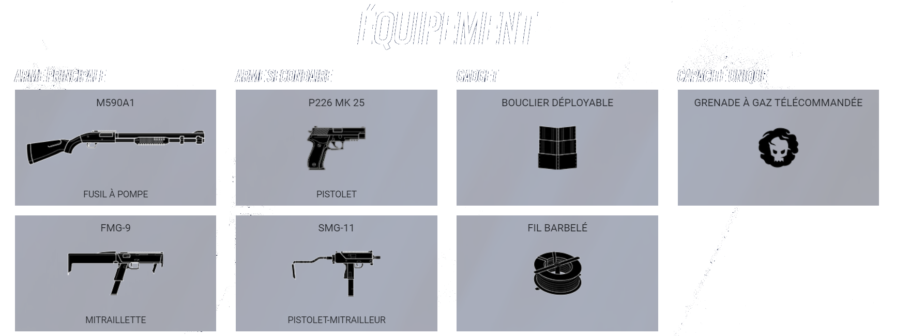
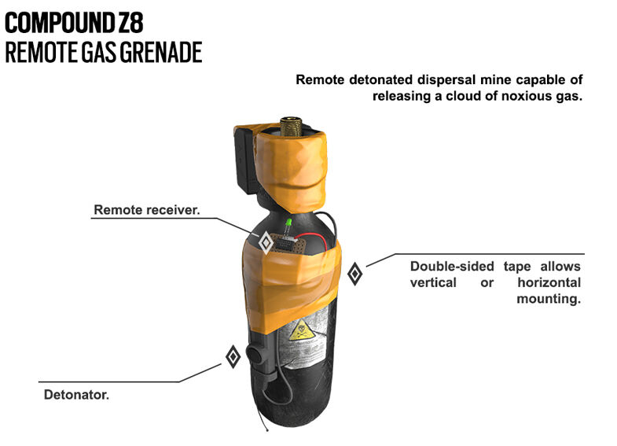

<!DOCTYPE html>
<html>
    <head>
        <title>Pionnier - Smoke</title>
        <link href="main.css" rel="stylesheet">
        <link rel = " shortcut icon" type = "images/png" href = "images/favicon.png">
        <meta name="viewport" content="width=device-width, initial-scale=1.0, user-scalable=yes, minimum-scale=0.25, maximum-scale=5.0"/>
    </head>
</html>

<body>
    <div id ="corps">
        <div class = "menu">
            <ul> 
                <li class="logo">  </li>
                <li> <a style="text-decoration:none;color:white;font-family: system-ui", href="index.html">Accueil</a> </li>
                <li> <a style="text-decoration:none;color:white;font-family: system-ui", href="capacites.html">Capacités</a> </li>
                <li> <a style="text-decoration:none;color:white;font-family: system-ui", href="videos.html">Vidéos</a> </li>
            </ul>
            <br><br><br><br><br><br>
            
            <br><br><br><br><br><br>
            <h1 class="center">Évaluation de l'appareil</h1>
            <p class="center">Appareil : Grenade à gaz à distance Compound Z8</p>
            <p class="center">Opérateur : Spécialiste James "Smoke" Porter</p>
            <p class="center">Responsable de l'évaluation : Spécialiste Liu Tze "Lesion" Long avec le spécialiste James "Smoke" Porter</p>

            <p class="center auto">Les tests contrôlés de la grenade composée Z8 ont nécessité un certain nombre de mesures, notamment la limitation de la présence du personnel de laboratoire aux plus critiques. Des règles strictes concernant l'élimination des EPI (équipements de protection individuelle) et les protocoles relatifs aux risques devaient être maintenus à tout moment. Même si l'installation est à la pointe de la technologie, des mesures de précaution supplémentaires étaient nécessaires avant que les tests puissent commencer.

                Les agents incapacitants du mélange Compound Z8 Grenade sont composés de - (les substances sont classées et ont donc été expurgées de ce document par ordre du directeur de la recherche et du développement ). En tant que tel, la présence du spécialiste James Porter et du spécialiste Liu Tze Long est requise à tout moment, y compris pour tout test futur.
                
                Les premiers tests étaient la collecte de données de base, y compris l'intégrité structurelle et la conception des cartouches, ainsi que le calendrier de déploiement et la plage d'effet. L'évaluation comprenait également une série de tests pour mesurer les niveaux d'exposition recommandés et, le cas échéant, les composés antidotes sont également en cours d'examen. Les résultats des données sont toujours en cours de traitement et seront joints lorsqu'ils seront prêts.
                
                <br><br><cite><strong>- Lésion et Smoke</strong></cite></p>
                <br><br><br><br><br><br><br>
                

            <br><br><br><br><br><br><h1 class="center"><i>Détails</i></h1>
            <p class="center auto">Smoke est équipé de trois grenades à gaz à distance composées Z8, des bonbonnes de gaz
            déclenchées à distance qui endommageront et éventuellement tueront toute personne avec laquelle elle entrera en contact.
            Le nuage de gaz dure 10 secondes avant de se dissiper.
            Smoke est le seul agent immunisé contre le nuage de gaz ; tous les autres personnages, 
            y compris les attaquants, les défenseurs, l' otage et les masques blancs, subiront des dégâts à l'intérieur du nuage de gaz.
            Les grenades à gaz ont un profil de lancement léger, ce qui signifie qu'elles peuvent être lancées rapidement et loin, 
            ce qui leur permet d'être facilement lancées et détonées lors d'un échange de tirs.</p><br><br>
        </div>
    </div>
    <script src="script.js" type="text/javascript" ></script>
</body>